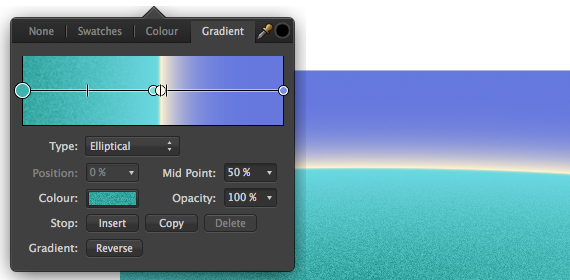

С помощью инструмента «Заливка» можно заполнить объект простым цветным градиентом. Созданный контур заливки можно редактировать непосредственно на объекте (добавить больше, чем два цвета по контуру градиента, настроить непрозрачность, изменить положение добавленных цветов или управлять цветовыми переходами).

Можно изменить приведенные далее параметры на контекстной панели инструментов (образце цвета).
Выберите инструмент «Заливка», нажмите на объект с примененной градиентной заливкой и выполните одно из перечисленных далее действий.